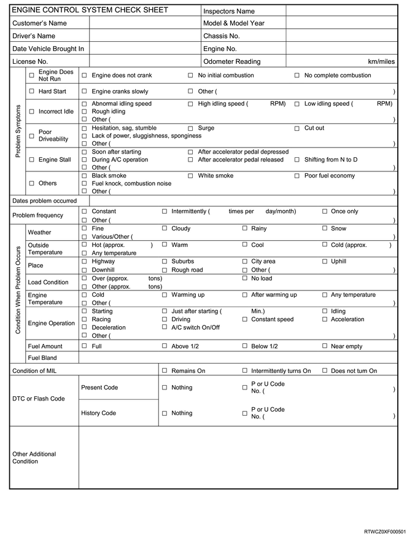

Introduction to the trouble diagnosis of engine (4JK1)
1. Introduction to the trouble diagnosis of engine
Begin the system diagnosis with Diagnostic System Check - Engine Controls. The Diagnostic System Check - Engine Controls provides the following information.
Identification of the control modules which command the system.
The functions of the control modules to communicate through the serial data circuit.
Identification of stored DTCs and their statuses.
The use of the Diagnostic System Check - Engine Controls will identify the correct procedure for diagnosing the system and where the procedure is located.
Engine Control System Check Sheet must be used to verify the customer complaint. You need to know the correct operating behavior of the system and verify that the customer complaint is a valid failure of the system.

Reading blinking DTCs
The system for communicating with the ECM is the Data Link Connector (DLC). The DTC(s) stored in the ECM memory can be read either by connecting a hand-held diagnostic scanner such as a scan tool with the DLC or by counting the number of blinking of the MIL when the diagnostic test terminal of the DLC is grounded.
The DLC terminal 12 is grounded by shorting to the ground line DLC terminal 4. Once terminals 12 and 4 have been connected, turn the ignition switch on, without starting the engine. If the MIL blinks DTC three times, it indicates that there is a current failure DTC or DTC in the failure history. If more than one DTC has been stored in the ECM's memory, the DTCs will be output numerical order with each DTC being displayed three times. The blinking DTC display continues as long as the DLC is shorted.

DTC type definition
There are 4 DTC types: Type A, B, C, and D. Among these DTCs, type A and B DTCs are related to emission whereas type C and D DTCs are related to items other than emission.
Action Taken When the DTC Sets, Type A
The ECM illuminates the MIL when the diagnostic runs and fails.
The ECM records the operating conditions at the time the diagnostic fails. The ECM stores this information in the Freeze Frame/Failure Records.
Actions taken when the DTC sets, Type B
When the diagnostic runs and detects an abnormality, the ECM illuminates the MIL on the second consecutive driving cycle.
The ECM records the operating conditions at the time the diagnostic fails. The first time the diagnostic fails, the ECM stores this information in the Failure Records. If the diagnostic reports a failure on the second consecutive driving cycle, the ECM records the operating conditions at the time of failure and stores this information in the Freeze Frame, and updates the Failure Records.
Conditions for clearing the MIL/DTC
Note
- Except Euro 4 specification
The ECM turns OFF the MIL after one driving cycle that the diagnostic runs and does not fail.
A current DTC clears after one driving cycle that the diagnostic runs and passes.
A history DTC clears after 40 consecutive warm-up cycles if no failures are reported.
Clear the MIL and the DTC with a scan tool.
Note
- Euro 4 specification
The ECM turns OFF the MIL after 3 consecutive driving cycles that the diagnostic runs and does not fail.
A current DTC clears after one driving cycle that the diagnostic runs and passes.
A history DTC is cleared after 40 consecutive warm-up cycles if no failures are reported.
Clear the MIL and DTC with a scan tool.
Actions taken when the DTC sets, Type C
When the diagnostic runs and fails, the ECM illuminates the SVS lamp.
The ECM records the operating conditions at the time the diagnostic fails.
The ECM stores this information in the Failure Records.
Conditions for clearing the SVS lamp and the DTC, Type C
The ECM turns OFF the SVS lamp after one driving cycle that the diagnostic runs and does not fail.
A current DTC clears after one driving cycle that the diagnostic runs and passes.
A history DTC is cleared after 40 consecutive warm-up cycles if no failures are reported.
Clear the SVS lamp and the DTC with a scan tool.
Actions taken when the DTC sets, Type D
The ECM will not illuminate the MIL or SVS lamp.
The ECM records the operating conditions at the time the diagnostic fails. The ECM stores this information in the Failure Records.
Conditions for Clearing the DTC, Type D
A current DTC clears after one driving cycle that the diagnostic runs and passes.
A history DTC clears after 40 consecutive warm-up cycles, if no failures are reported.
Clear the DTC with a scan tool.
DTC List
| DTC | DTC Type | |
| Euro 4 Specification | Except Euro 4 Specification | |
| DTC P0016 (Flash code 16) Crankshaft Position - Camshaft Position Correlation | A | A |
| DTC P0045 (Flash Code 33) Turbocharger Boost Control Solenoid Circuit | A | A |
| DTC P0087 (Flash Code 225) Fuel Rail/System Pressure - Too Low | B | D |
| DTC P0088 (Flash Code 118) Fuel Rail/System Pressure - Too High | A | A |
| DTC P0089 (Flash Code 151) Fuel Pressure Regulator Performance | B | B |
| DTC P0091 (Flash Code 247) Fuel Pressure Regulator Control Circuit Low | A | A |
| DTC P0092 (Flash Code 247) Fuel Pressure Regulator Control Circuit High | A | A |
| DTC P0093 (Flash Code 227) Fuel System Leak Detected | B | B |
| DTC P0101 (Flash Code 92) Mass Air Flow Circuit Range/Performance | B | - |
| DTC P0102 (Flash Code 91) Mass Air Flow Circuit Low Input | A | A |
| DTC P0103 (Flash Code 91) Mass Air Flow Circuit High Input | A | A |
| DTC P0112 (Flash Code 22) Intake Air Temperature Sensor Circuit Low | A | A |
| DTC P0113 (Flash Code 22) Intake Air Temperature Sensor Circuit High | A | A |
| DTC P0116 (Flash Code 23) Engine Coolant Temperature Sensor Circuit Range/Performance | B | - |
| DTC P0117 (Flash Code 23) Engine Coolant Temperature Sensor Circuit Low | A | A |
| DTC P0118 (Flash Code 23) Engine Coolant Temperature Sensor Circuit High | A | A |
| DTC P0122 (Flash Code 43) Throttle Position Sensor Circuit Low | A | A |
| DTC P0123 (Flash Code 43) Throttle Position Sensor Circuit High | A | A |
| DTC P0182 (Flash Code 211) Fuel Temperature Sensor Circuit Low | A | A |
| DTC P0183 (Flash Code 211) Fuel Temperature Sensor Circuit High | A | A |
| DTC P0192 (Flash Code 245) Fuel Rail Pressure Sensor Circuit Low | A | A |
| DTC P0193 (Flash Code 245) Fuel Rail Pressure Sensor Circuit High | A | A |
| DTC P0201 (Flash Code 271) Injector Circuit - Cylinder 1 | A | A |
| DTC P0202 (Flash Code 272) Injector Circuit - Cylinder 2 | A | A |
| DTC P0203 (Flash Code 273) Injector Circuit - Cylinder 3 | A | A |
| DTC P0204 (Flash Code 274) Injector Circuit - Cylinder 4 | A | A |
| DTC P0217 (Flash Code 542) Engine Coolant Over Temperature Condition | D | D |
| DTC P0219 (Flash Code 543) Engine Overspeed Condition | D | D |
| DTC P0234 (Flash Code 42) Turbocharger Overboost Condition | A | A |
| DTC P0237 (Flash Code 32) Turbocharger Boost Sensor Circuit Low | A | A |
| DTC P0238 (Flash Code 32) Turbocharger Boost Sensor Circuit High | A | A |
| DTC P0299 (Flash Code 65) Turbocharger Underboost | B | B |
| DTC P0335 (Flash Code 15) Crankshaft Position Sensor Circuit | A | A |
| DTC P0336 (Flash Code 15) Crankshaft Position Sensor Circuit Range/Performance | A | A |
| DTC P0340 (Flash Code 14) Camshaft Position Sensor Circuit | A | A |
| DTC P0380 (Flash Code 66) Glow Plug Circuit | C | A |
| DTC P0401 (Flash Code 93) Exhaust Gas Recirculation (EGR) Flow Insufficient Detected | A | - |
| DTC P0403 (Flash Code 347) Exhaust Gas Recirculation (EGR) Control Circuit | A | A |
| DTC P0404 (Flash Code 45) Exhaust Gas Recirculation (EGR) Control Circuit Range/Performance | - | A |
| DTC P0500 (Flash Code 25) Vehicle Speed Sensor | A | A |
| DTC P0563 (Flash Code 35) System Voltage High | C | A |
| DTC P0565 (Flash Code 515) Cruise Control On Signal | D | D |
| DTC P0566 (Flash Code 516) Cruise Control Off Signal | D | D |
| DTC P0567 (Flash Code 517) Cruise Control Resume Signal | D | D |
| DTC P0568 (Flash Code 518) Cruise Control Set Signal | D | D |
| DTC P0571 (Flash Code 26) Brake Switch Circuit | D | D |
| DTC P0601 (Flash Code 53) Internal Control Module Memory Check Sum Error | A | A |
| DTC P0602 (Flash Code 154) Control Module Programming Error | C | A |
| DTC P0604 (Flash Code 153) Internal Control Module Random Access Memory (RAM) Error | A | A |
| DTC P0606 (Flash Code 51) ECM/PCM Processor | A | A |
| DTC P060B (Flash Code 36) Internal Control Module A/D Processing Performance | A | A |
| DTC P0633 (Flash Code 176) Immobilizer Key Not Programmed - ECM/PCM | D | D |
| DTC P0638 (Flash Code 61) Throttle Actuator Control Range/Performance | A | A |
| DTC P0641 (Flash Code 55) Sensor Reference Voltage 1 Circuit | A | A |
| DTC P0650 (Flash Code 77) Malfunction Indicator Lamp (MIL) Control Circuit | A | D |
| DTC P0651 (Flash Code 56) Sensor Reference Voltage 2 Circuit | A | A |
| DTC P0661 (Flash Code 58) Intake Manifold Tuning Valve Control Circuit Low | C | A |
| DTC P0662 (Flash Code 58) Intake Manifold Tuning Valve Control Circuit High | C | A |
| DTC P0685 (Flash Code 416) ECM Power Relay Control Circuit/Open | C | A |
| DTC P0687 (Flash Code 416) ECM Power Relay Control Circuit High | C | A |
| DTC P0697 (Flash Code 57) Sensor Reference Voltage 3 Circuit | A | A |
| DTC P0700 (Flash Code 185) Transmission Control System (MIL Request) | A | - |
| DTC P1093 (Flash Code 227) Fuel Rail Pressure (FRP) Too Low | B | B |
| DTC P1261 (Flash Code 34) Injector Positive Voltage Control Circuit Group 1 | A | A |
| DTC P1262 (Flash Code 34) Injector Positive Voltage Control Circuit Group 2 | A | A |
| DTC P1404 (Flash Code 45) Exhaust Gas Recirculation (EGR) Closed Position Performance | - | A |
| DTC P161B (Flash Code 179) Immobilizer Wrong Response | D | D |
| DTC P1621 (Flash Code 54, 254) Control Module Long Term Memory Performance | A | A |
| DTC P2122 (Flash Code 121) Pedal Position Sensor 1 Circuit Low Input | A | A |
| DTC P2123 (Flash Code 121) Pedal Position Sensor 1 Circuit High Input | A | A |
| DTC P2127 (Flash Code 122) Pedal Position Sensor 2 Circuit Low Input | A | A |
| DTC P2128 (Flash Code 122) Pedal Position Sensor 2 Circuit High Input | A | A |
| DTC P2138 (Flash Code 124) Pedal Position Sensor 1 - 2 Voltage Correlation | A | A |
| DTC P2146 (Flash Code 158) Fuel Injector Group 1 Supply Voltage Circuit | A | A |
| DTC P2149 (Flash Code 159) Fuel Injector Group 2 Supply Voltage Circuit | A | A |
| DTC P2227 (Flash Code 71) Barometric Pressure Circuit Range/Performance | B | B |
| DTC P2228 (Flash Code 71) Barometric Pressure Circuit Low | A | A |
| DTC P2229 (Flash Code 71) Barometric Pressure Circuit High | A | A |
| DTC U0001 (Flash Code 84) High Speed CAN Communication Bus | A | A |
| DTC U0101 (Flash Code 85) Lost Communication With TCM | A | A |
| DTC U010A (Flash Code 346) Lost Communication with Exhaust Gas Recirculation (EGR) Control Module | A | A |
| DTC U0167 (Flash Code 177) Lost Communication With Vehicle Immobilizer Control Module | D | D |